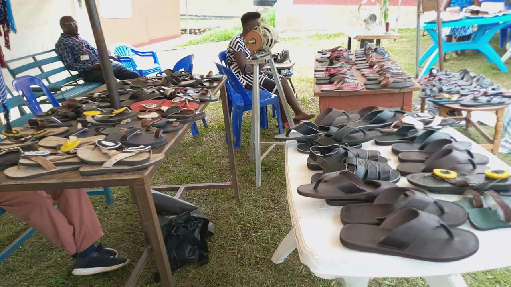

Real work. Practical skills.
Community progress.
SDI's impact is built through vocational learning, livelihood skills, community agriculture and empowerment. Verified results and reports will be published as they are approved for public sharing.
Hands-On Training in Sandal Making.
Trainees practise making sandals during a leatherwork and craft skills session at SDI, Rwamwanja — November 2026.
Participants learn to cut, shape and assemble sandals using locally available materials, gaining a practical skill they can use to earn an income and support their families.

Sandal-making in practice.
A field video from SDI's practical leatherwork training session.
If the video does not appear, add the original file named video-sandal-maker.mp4 to assets/videos/.
Learning and working together.
Selected SDI activity images. Select a photo to view it larger. Only publish media with appropriate participant consent.
Reports and organisational documents.
Downloadable documents are important for institutional partners and grantmakers. Add approved PDFs to the reports folder and link them here.
Annual activity reports
Approved annual reports will be made available here.
Document pending publicationStrategic plan
SDI's approved strategic plan will be linked here.
Document pending publicationOrganisation profile
Download the current approved organisational profile when uploaded.
Document pending publicationImpact metrics, individual case studies, partner names and downloadable documents have not been invented. Add verified figures and approved materials before public launch.